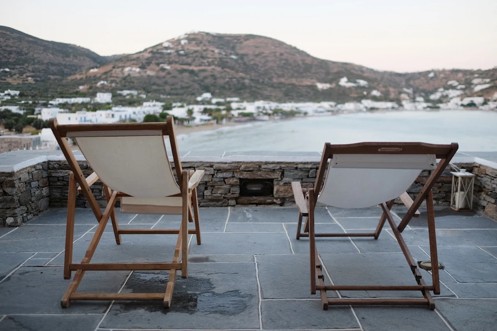
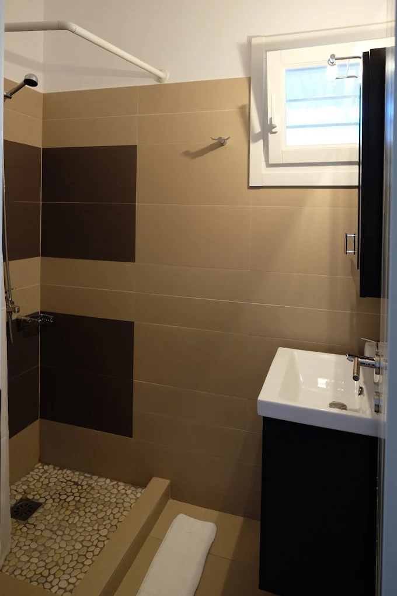

Μεζονέτα
- Όροφος: υπνοδωμάτιο με διπλό κρεβάτι και μπαλκόνι
- Ισόγειο: καθιστικό με καναπέ-κρεβάτι
- Μπάνιο, πλήρως εξοπλισμένη κουζίνα
- Ιδιωτική βεράντα με θέα στη θάλασσα
- Κλιματισμός, Wi-Fi

Ένα ασβεστωμένο σπίτι στο μικρό ακρωτήρι του Πλατύ Γιαλού, στη Σίφνο, με τη θάλασσα κάτω από κάθε βεράντα.
Ακρωτηράκι
Στο Ακρωτηράκι, το μικρό ακρωτήρι του Πλατύ Γιαλού, στέκεται ένα ασβεστωμένο κυκλαδίτικο σπίτι, χωρισμένο σε τέσσερα διαμερίσματα, δύο μεζονέτες και δύο στούντιο, με πέτρινες βεράντες, πέργκολες και κήπο περίπου 5.000 τ.μ.
Είμαστε οικογένεια από το νησί και φροντίζουμε μόνοι μας τα διαμερίσματα.

Τα διαμερίσματα
Όλα έχουν θέα στη θάλασσα, ιδιωτική βεράντα, κλιματισμό και Wi-Fi, και ένα καλάθι καλωσορίσματος με τοπικά προϊόντα.

Εποχιακές τιμές· η φόρμα αιτήματος δείχνει την τιμή για τις ημερομηνίες σας.

Ο τόπος

Περίπου 60 μ. κάτω από το σπίτι βρίσκεται η βραχώδης ακτή του κτήματός μας, για μπάνιο.
Η μεγάλη αμμουδιά του Πλατύ Γιαλού απέχει περίπου 250 μ., πέντε λεπτά με τα πόδια, με ταβέρνες και μαγαζιά κατά μήκος της ακτής.
Η Απολλωνία, η πρωτεύουσα της Σίφνου, απέχει 15 λεπτά με το αυτοκίνητο. Στη Σίφνο φτάνει κανείς με πλοίο από τον Πειραιά.
Ο λόφος στο Ακρωτηράκι είναι και αρχαιολογικός χώρος. Εδώ βρέθηκαν ένας πρωτοκυκλαδικός οικισμός της Πρώιμης Εποχής του Χαλκού και το νεκροταφείο του, μαζί με μερικές από τις πρωιμότερες, με βεβαιότητα χρονολογημένες, ενδείξεις παραγωγής αργύρου στις Κυκλάδες.

Φωτογραφίες
Χρήσιμα
Τοποθεσία
Πλατύς Γιαλός, Σίφνος · 250 μ. από την παραλία · 15 λεπτά από την Απολλωνία
Στους Χάρτες Google θα μας βρείτε ως «Akrotiraki Apartments».
Άνοιγμα στους Χάρτες Google · 36,9282° Β, 24,7259° Α
Επικοινωνία
Διαλέξτε ημερομηνίες και διαμέρισμα και στείλτε μας αίτημα. Θα σας απαντήσουμε προσωπικά για τη διαθεσιμότητα και την τιμή· τίποτα δεν κλείνεται πριν το επιβεβαιώσουμε.
Σας στείλαμε επιβεβαίωση λήψης στο και θα σας απαντήσουμε προσωπικά μέσα σε μία με δύο ημέρες. Τίποτα δεν έχει κλειστεί ακόμη.
Αν οι ημερομηνίες σας ταιριάζουν καλύτερα στο άλλο διαμέρισμα του ίδιου τύπου, ίσως σας προτείνουμε εκείνο· είναι όμοια.
Προτιμάτε email; Χρησιμοποιήστε τη φόρμα και θα σας απαντήσουμε από τη δική μας διεύθυνση.